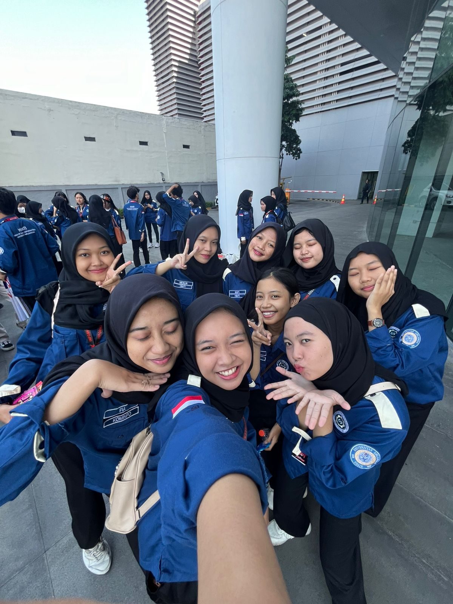
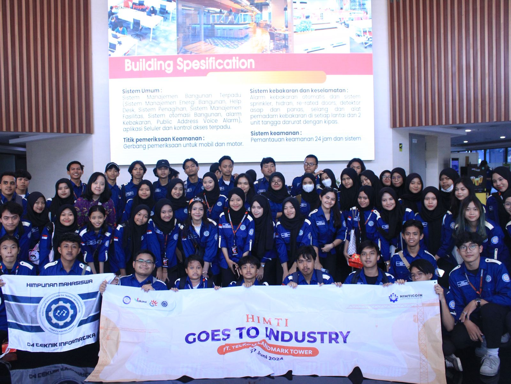
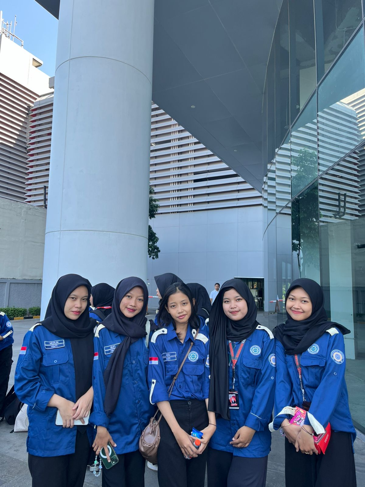
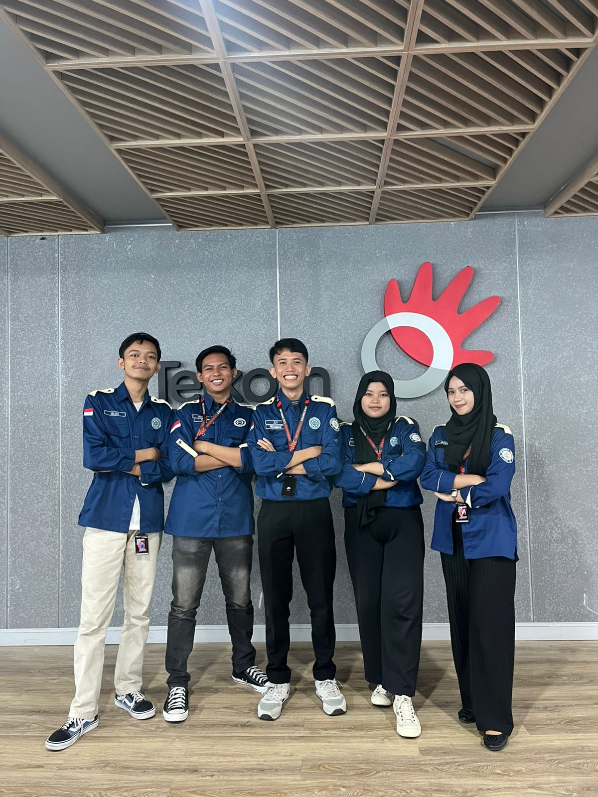
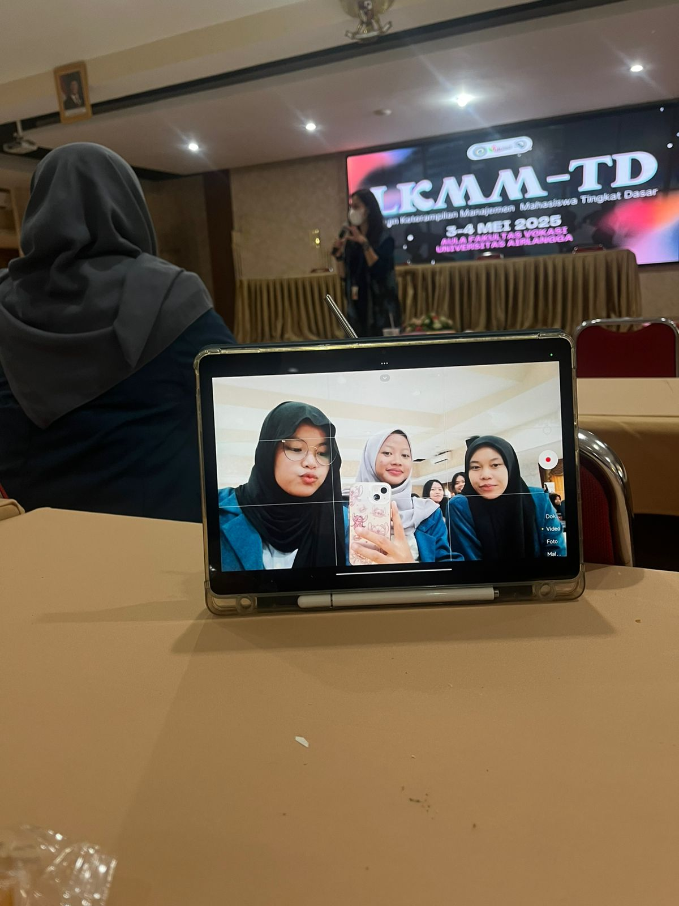
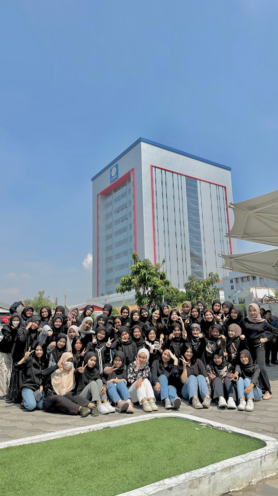
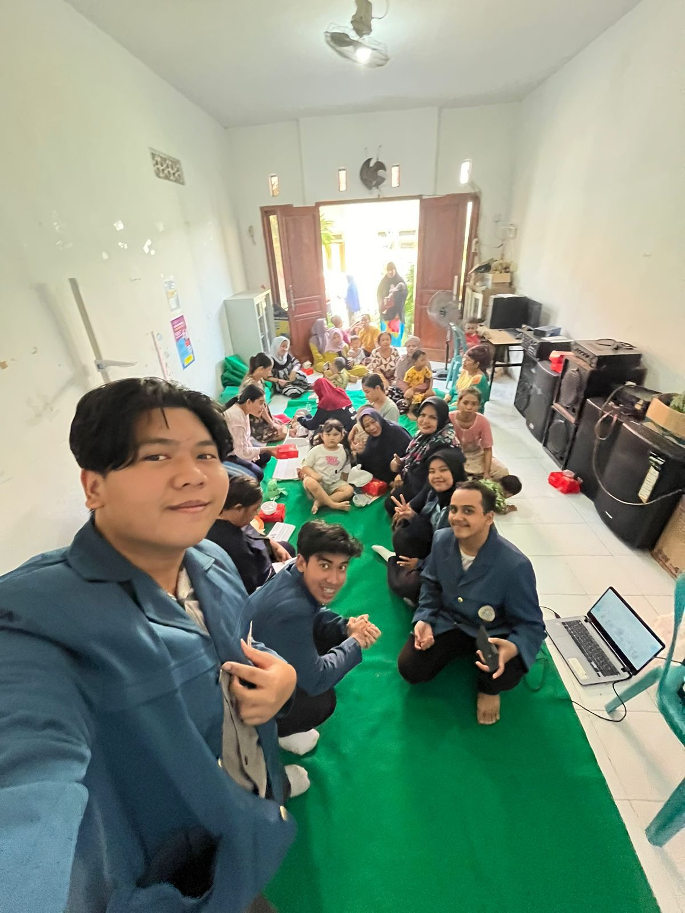

Getting to Know Inunk Rodliyah Better

Short Biography
Hello! I'm Inunk Rodliyah, a passionate and detail-oriented student in the D4 Informatics Engineering program at Airlangga University, with a current GPA of 3.49/4.00. I have a strong understanding of web development, both front-end and back-end.
I am also very interested in Computer Networking and am actively developing my fundamental knowledge in this field. I have experience in managing team projects, adapt quickly to dynamic environments, and have proven leadership skills as a Project Manager in academic assignments. I am a communicative, flexible, and skilled time-management individual, able to work effectively both independently and in a team.
Majors and Interests
- Major: Diploma 4 Informatics Engineering, Airlangga University.
- Relevant Courses: Web Programming, User Interface Design, Algorithms & Programming, Computer Networks (Basic).
- Main Interests: Web Development (Front-end & Back-end), Computer Networking.
- Other Skills: UI/UX Design (Basic Figma), Project Management (Agile Basics).
Career Goals
I'm excited to apply my technical skills and proactive mindset to make a real contribution in a role as an IT Programmer or Network Professional. My short-term goal is to gain in-depth, practical experience in the industry. Long-term, I aspire to become a competent and recognized IT professional, continually learning and innovating at the intersection of web development and computer networking.
My Media & Network
Photo Gallery & Collage






